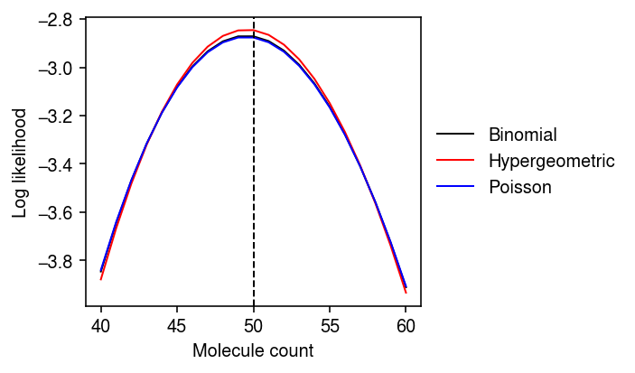

Effect of capture rate on sampling variation
Table of Contents
Introduction
We and others argue that sampling variation in observed scRNA-seq counts follows:
\[ x_1, \ldots, x_p \mid s \sim \mathrm{Multinomial}(s, (\alpha_1, \ldots, \alpha_p)) \]
where \(\alpha_j\) denotes the relative abundance of gene \(j\) in the cell. This model implicitly assumes sampling with replacement, i.e. that the pool of molecules is much larger than the number of sampled molecules. But what happens if we sample a non-trivial fraction of all available molecules, say 10-40% (e.g., Shalek 2014)? In the extreme case, what would happen if we actually managed to sequence all of the available molecules?
Setup
import numpy as np import scipy.stats as st
%matplotlib inline %config InlineBackend.figure_formats = set(['retina'])
import matplotlib.pyplot as plt plt.rcParams['figure.facecolor'] = 'w' plt.rcParams['font.family'] = 'Nimbus Sans'
Results
Consider gene \(j\), and partition the molecules into those which map to gene \(j\) and those which do not. Then, the Multinomial distribution reduces to the binomial distribution, and its analogue without replacement is the hypergeometric distribution.
Suppose there are a total of \(N\) molecules, of which \(n_j\) come from the gene \(j\). Further suppose we sequence \(p\) fraction of the molecules. Then, we have multiple descriptions of the data:
\[ x_j \sim \mathrm{Poisson}(n_j p) \triangleq P_1 \]
\[ x_j \sim \mathrm{Binomial}(Np, n_j / N) \triangleq P_2 \]
\[ x_j \sim \mathrm{Hypergeometric}(Np, N, n_j) \triangleq P_3 \]
These have equal expected value \(n_j p\), but unequal variances:
\[ V_{P_1}[x_j] = n_j p \]
\[ V_{P_2}[x_j] = n_j p \frac{N - n_j}{N} \]
\[ V_{P_3}[x_j] = n_j p \frac{N - n_j}{N} \frac{N}{N - 1} (1 - p) \]
Look at the log likelihood for some settings of these parameters.
N = 1e5 n1 = .01 * N p = .05
plt.clf() plt.gcf().set_size_inches(5, 3) mean = n1 * p sd = n1 * p * (N - n1) / N grid = np.arange(np.floor(mean - 10), np.ceil(mean + 10) + 1) plt.plot(grid, st.binom(n=N * p, p=n1 / N).logpmf(grid), lw=1, c='k', label='Binomial') plt.plot(grid, st.hypergeom(M=N, n=n1, N=N * p).logpmf(grid), lw=1, c='r', label='Hypergeometric') plt.plot(grid, st.poisson(mu=n1 * p).logpmf(grid), lw=1, c='b', label='Poisson') plt.axvline(x=n1 * p, ls='--', lw=1, c='k') plt.legend(frameon=False, bbox_to_anchor=(1, .5), loc='center left') plt.xlabel('Molecule count') plt.ylabel('Log likelihood') plt.tight_layout()

We built an interactive simulation to look at different parameter settings.